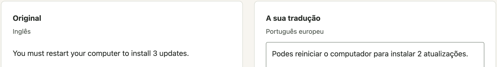
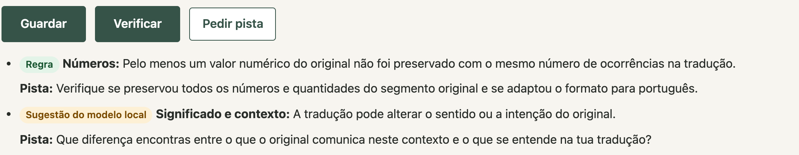

CAT Básico & Persistência
Editor segmentado reativo em React 19, persistência relacional SQLite via SQLAlchemy 2.0 e gravação ao mudar de segmento. Memória de tradução com pesquisa de originais semelhantes.
Projeto de Engenharia Informática · Universidade do Minho
Ferramenta aberta para praticar tradução de inglês para português europeu, com editor segmentado, memória de tradução, verificações por regras e pistas de um modelo local que orientam a revisão sem entregar a solução.
No ensino de tradução, o objetivo central não é apenas acelerar a entrega, mas desenvolver autonomia crítica. A entrega direta de soluções prontas por modelos generativos pode reduzir a reflexão do estudante.
Esta ferramenta apoia a prática em segmentos curtos (EN → PT-PT). O aluno guarda o trabalho, reutiliza traduções anteriores, verifica restrições formais e pede pistas que indicam onde rever, deixando-lhe a reformulação.
Editor segmentado com persistência SQLite e memória de tradução, cinco regras determinísticas (tradução vazia, números, glossário, marcadores e etiquetas) e pistas híbridas que juntam as regras a um Qwen local via Ollama, indicando a origem de cada alerta.
Protótipo concluído e avaliado · 2026
Depois de pedir uma pista: a regra assinala o número alterado e o modelo local aponta uma diferença de sentido sem dar a correção.


Editor segmentado reativo em React 19, persistência relacional SQLite via SQLAlchemy 2.0 e gravação ao mudar de segmento. Memória de tradução com pesquisa de originais semelhantes.
Motor de regras reproduzíveis: validação de tradução vazia, conformidade de termos de glossário com variantes, valores numéricos, marcadores e etiquetas simples.
Pistas a pedido de um Qwen local (via Ollama), fundidas com as regras. As regras têm prioridade e um filtro generaliza as pistas que parecem revelar a solução.
40 casos de teste não usados no desenvolvimento, com o prompt da aplicação (v3) e um prompt revisto (v4).
| Método (18 casos principais) | F1 v3 | F1 v4 |
|---|---|---|
| Regras | 100% | 100% |
| LLM isolado | 66,7% | 70,6% |
| Híbrido | 90,9% | 95,2% |
python3 -m venv .venv
.venv/bin/python -m pip install -r backend/requirements.txt
.venv/bin/python -m uvicorn backend.main:app --port 8000cd frontend
npm ci
npm run dev